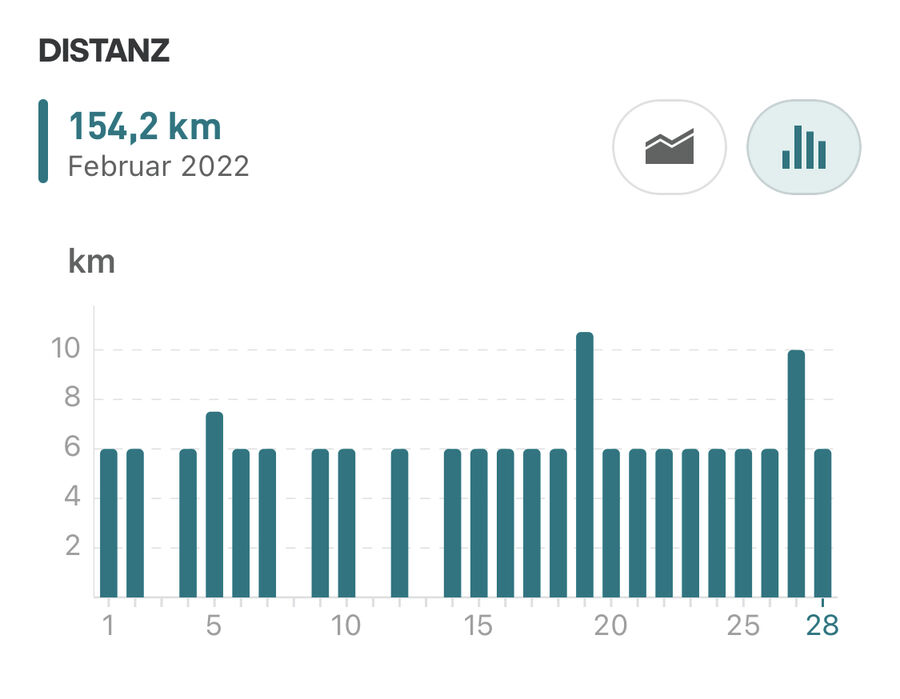

Trotz 3 Tage weniger habe ich im Februar mein Laufpensum mit 154 Km im Vergleich zum Vormonat noch steigern können. Knie und Rücken halten soweit. Ich bin aber mehr gegangen als gelaufen, auch weil das Wetter sehr schlecht war und ich vermehrt auf dem Laufband unterwegs war.
Krafttraining habe ich auf Anraten meines Arztes noch nicht begonnen, werde es jetzt aber im März.
